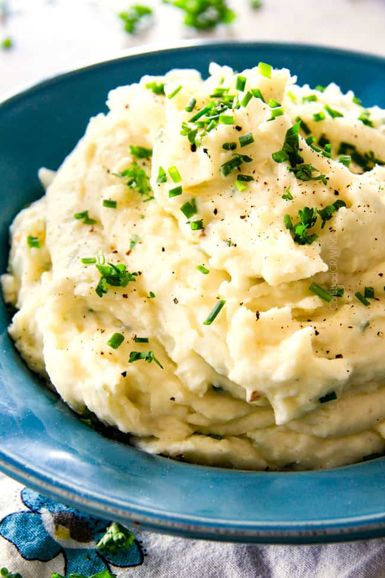

About

Mashed potatoes is a dish that consists of boiled potatoes, milk, salt, and pepper. Its origins date back as early as 1747, appearing as an early recipe in "The Art of Cookery" by Hannah Glasse. While a variety of potatoes are utilized in the dish, the most common types are the Yukon Gold and Russett potatoes. Mashed potatoes can be served as a side dish or as an ingredients to dishes such as shepherd's pie.
Ingredients
- Potatoes (50/50 ratio of Russett and Yukon Gold)
- Kosher salt
- Unsalted Butter
- Whole milk
- Sour cream
- Freshly ground black pepper
Steps
- In a large pot, submerge potatoes with hot water and add salt. Bring to a boil and cook for about 16 to 18 minutes or until potatoes are soft. Drain and return potatoes to the pot.
- Use a potato ricer or potato masher to mash potato until a smooth consistency is reached.
- Mix warm milk and butter and add to potatoes until fully combined. Add sour cream and stir.
- Season potatoes with salt and pepper to taste.